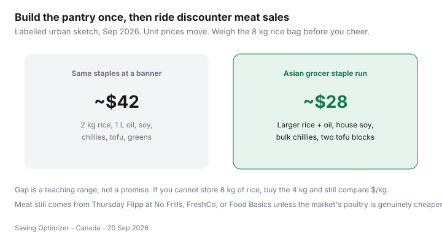

Food & Groceries · Canada
How to save on staples at Asian grocers in Canada (rice, produce, sauces)
Households pay banner prices for jasmine rice, soy sauce, and a clamshell of greens while an Asian grocer two bus stops away sells the same jobs in larger, cheaper units. That is not a secret cuisine. It is a staples strategy that shows up over and over in Canadian city threads — including “cheaper than Costco” conversations that are really about pack size and turnover.
This guide is rice, oil, produce, sauces, and storage. Meat still comes from Thursday Flipp unless the market’s poultry unit price wins. The wider independent-market rules live in ethnic grocers.
Disclosure: There is no natural affiliate product in a rice bag. Saving Optimizer does not claim partnerships with Asian grocers, Costco, or sauce brands. Shop with the list. Nothing here needs a click.
Key takeaways
- Compare rice and oil on $/kg or $/L, not on the pretty 900 g box at a full-service banner.
- High-turnover greens and tofu often beat sad clamshells. Smell them. Skip the tired pile.
- Build a short sauce set (soy, chili, vinegar) instead of twelve bottles you will not finish.
- Keep flyer chicken on a discounter week unless the market’s tray is genuinely cheaper after the extra stop.
- Large packs need storage and a finish date. Waste erases the staple win.
Staples that often beat big banners

Rice, cooking oil, soy, chili crisp or fresh chilies, noodles, tofu, green onions, napa, and bok choy are the usual list. National-brand snacks in the same store can be as expensive as Superstore. Stay in the staple aisles.
Navigating bulk rice and oil sizes
| Pack | When it wins | When it loses |
|---|---|---|
| 2 kg rice | Small kitchen, one or two people | You cook rice four nights a week — go bigger |
| 4–8 kg rice | You have a bin and a monthly pace | A humid cupboard and no plan |
| 1–2 L oil | Most households | A 10 L jug you cannot lift or use |
| Costco rice | Membership already paying its way | A dedicated trip for one bag |
Costco is a rival, not a religion — split the cart if the warehouse bag is the true $/kg winner and you will finish it.
Produce quality and turnover
Busy greens tables are the point. Buy what you will cook in three days: napa, gai lan, green onion, cucumber, cheap cabbage. Herbs in bunches often beat the $4 plastic pack at a premium banner. If the pile looks like closing time on a Sunday, walk to frozen veg.
Sauce and noodle pantry building
Start with three: soy, a chili, and a vinegar (rice or white). Add oyster or hoisin only if last month’s bottle is empty. Instant noodles can be a $0.50 emergency meal or a $1.50 habit — put a number on the list so they are not a browse. Flavour systems that keep tofu edible are in the plant-protein guide.
Combining with Flipp meat sales elsewhere
The winning Canadian week is boring: Asian grocer for rice and greens, No Frills or FreshCo for the Thursday bird, one loyalty card at the discounter till. Do not chase a second meat case unless $/kg wins after the extra stop — two-store math.
List rule: five staples plus this week’s greens. The sauce wall is designed to empty a bored brain.
Storage tips for larger packs
- Decant rice into a sealed bin. Keep the lot code or purchase month on tape.
- Oil: cool and dark. Do not park it above the stove for six months.
- Opened sauces: follow the label; many belong in the fridge.
- Tofu: cook or freeze extra blocks the same week. Silken and firm are not interchangeable leftovers.
- If pests appear, the cheap bag just became expensive. Buy smaller next time.
Love Food Hate Waste’s planning advice still applies: a large pack without a meal is a donation to the bin. Pair storage with food-waste systems.
Sources & date stamps
- Community pattern: r/PersonalFinanceCanada “cheaper than Costco” and grocery-comparison threads — Asian-market rice, produce, and pantry. Directional, not a volume statistic.
- Love Food Hate Waste Canada, plan-your-meal guidance (lovefoodhatewaste.ca; used 20 Sep 2026).
- Statistics Canada Daily, 14 Sep 2026: food from stores +2.8% year over year in August 2026 — staple unit prices still move.
Frequently asked questions
What staples are often cheaper at Asian grocers in Canada?
Rice (especially 4–8 kg bags), cooking oil, soy and chili sauces, noodles, tofu, green onions, napa, and other high-turnover greens. Banner jasmine in a 900 g box is often a convenience tax.
Is an 8 kg rice bag always the deal?
Only if you will finish it before it goes stale or the weevils arrive. Compare $/kg, then be honest about storage. A 4 kg bag that gets eaten wins.
Should I also buy meat there?
Sometimes. Compare $/kg to this week’s Flipp loss leader at No Frills, FreshCo, or Food Basics. The market wins more often on pantry and produce than on a Thursday chicken event.
How do I store larger sauce bottles and oil?
Cool, dark cupboard. Date the bottle with a marker. Refrigerate sauces if the label says so after opening. Buying 1.8 L of oyster sauce for two people is how cupboards become museums.
Do I need to cook ‘Asian food’ for this to work?
No. Rice, frozen veg, soy sauce, and tofu are weeknight tools. You can still cook the flyer chicken.